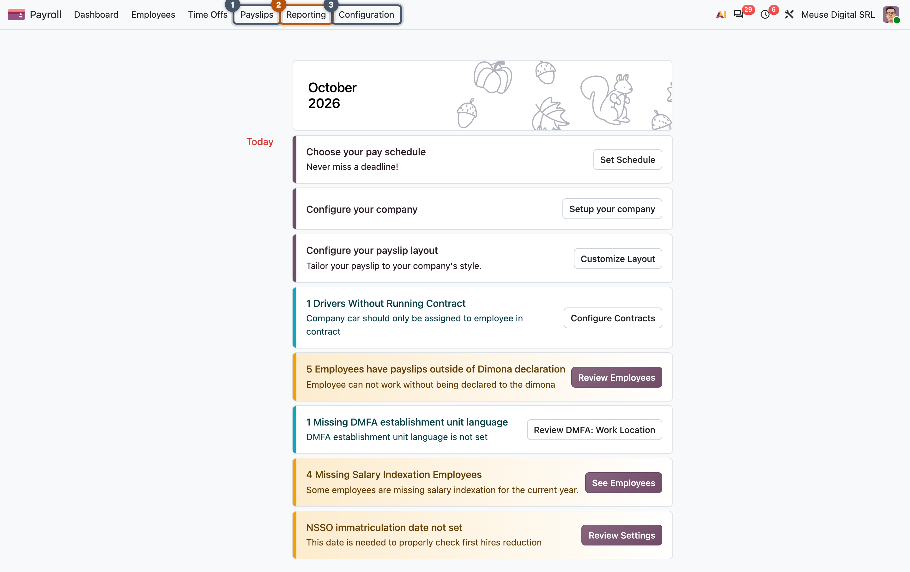
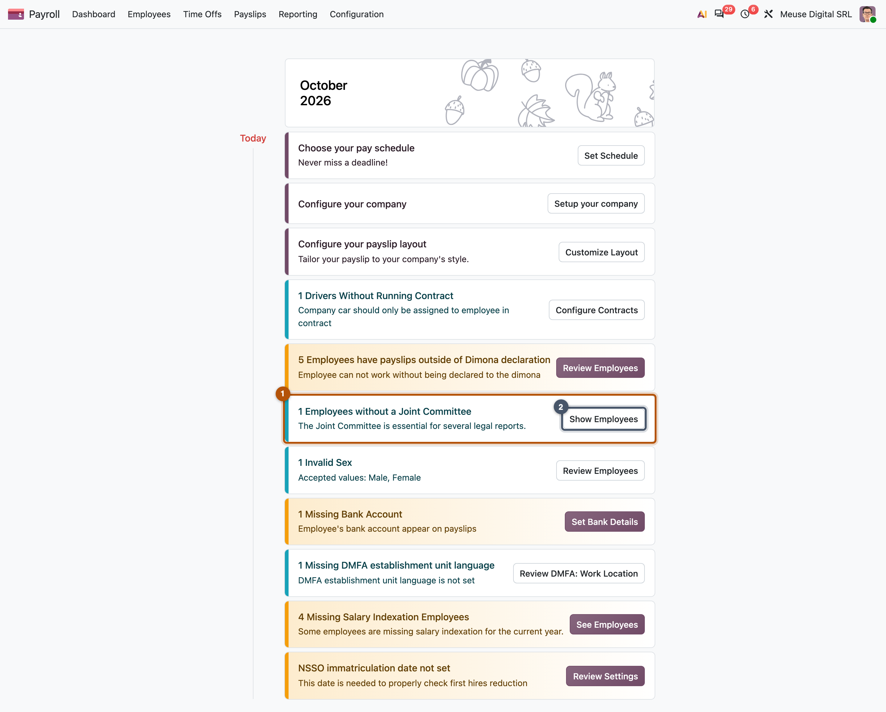
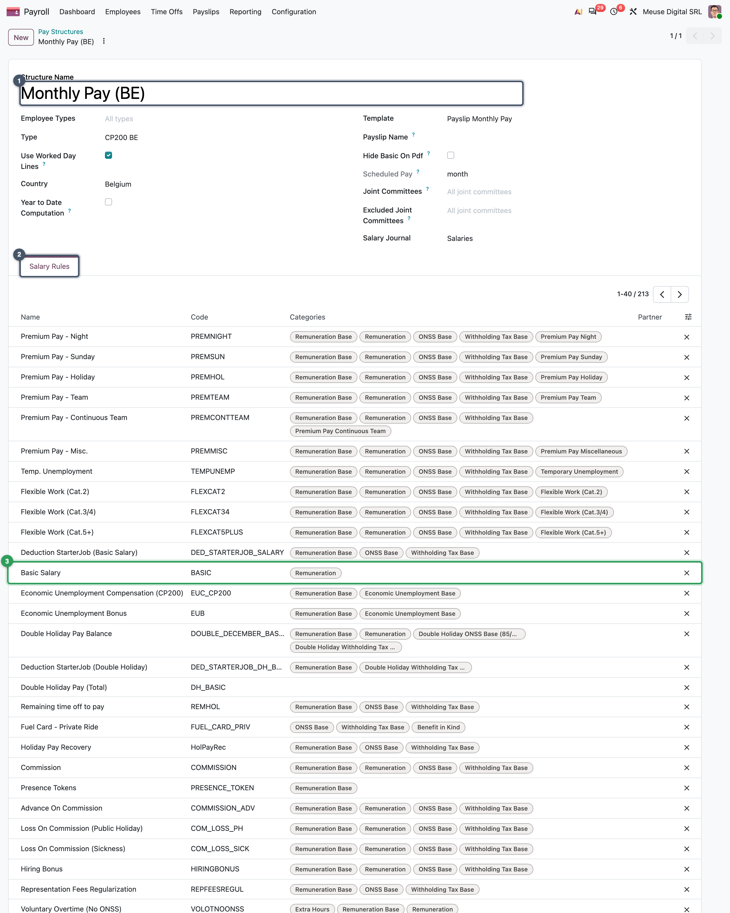
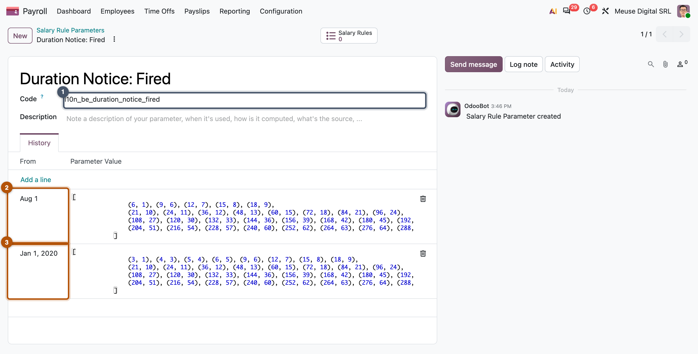
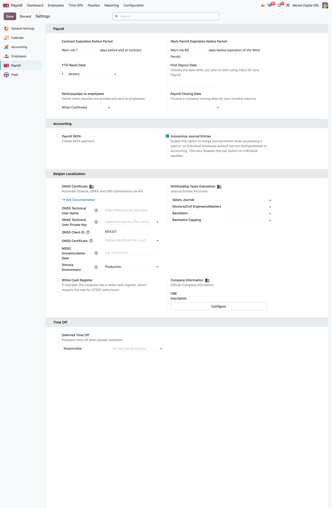

Tour and setup
Which modules make up payroll, what each menu holds, and where the company settings live
- Name the modules of Odoo payroll and say what each one adds
- Find your way in the Payroll app: dashboard, employees, time off, payslips, reporting, configuration
- Tell a structure type, a structure, a salary rule and a rule parameter apart
- Configure a company's payroll settings and read the dashboard warnings
- Set up MyVidangeCompany's payroll from scratch on the master runbot
It is your first morning on a payroll project. Someone gives you an empty Odoo and says: "Set up payroll for our company and run the year." Before you click anything you need a map: which module owns which screen, where the wage lives, where the law lives, and what the dashboard is telling you. This chapter is that map, and its missions set up the company you will pay all year.
Part III follows the data. The employee's version (Chapter 13) says what to pay. Time (Chapter 14) says how much of it was earned. A pay run (Chapter 15) turns both into payslips. Accounting (Chapter 16) books and pays the result. Declarations (Chapter 17) tell the authorities.
Each chapter ends with missions, played on one master runbot database that you build from an empty Odoo (the preface explains how). They follow MyVidangeCompany through 2026:
January setup, first run, a late correction → March Yannick joins → April sick day, unpaid day → May raise, overtime → June holiday-pay run → October Emma leaves, capstone month
Common pitfall: the wrong company
A runbot database also holds Odoo's demo companies. If the company switcher (top right) is not on MyVidangeCompany, the Payroll app shows other employees, structures and warnings, and no mission check will match.
The module stack
Payroll is not one module but a stack. Each layer adds one idea.
| Module | Adds |
|---|---|
resource |
working schedules, public holidays, the time-interval engine |
hr |
employees and hr.version, the dated record of the employment terms |
hr_work_entry, hr_holidays |
time types, the work-entry generator, time off |
hr_payroll (enterprise) |
structures, rules, parameters, payslips, pay runs, warnings, declarations |
hr_payroll_account, hr_payroll_account_iso20022 |
journal entries from payslips; the SEPA bank file |
l10n_be_hr_payroll (+ _account) |
the Belgian structures, rules, parameters, declarations and accounts |
Arrows point to what a module depends on. The localization sits on top of hr_payroll and never replaces it.
The Payroll app, menu by menu

| Menu | Opens | Chapter |
|---|---|---|
| Employees | the employee form and its Payroll tab (hr.version) | 13 |
| Time Offs | the absences of each employee (hr.leave) | 14 |
| Payslips > Pay Runs / Payslips | hr.payslip.run, hr.payslip | 15 |
| Reporting | pivots on payslip lines, and the country's declarations | 17 |
| Configuration > Settings, Company data | the company's payroll settings | this chapter |
| Configuration > Salary | structures, rules, parameters, categories | Part IV |
Configuration is for payroll managers; payroll officers see the other menus.
The dashboard is a list of checks
Every card on the dashboard is a record of hr.payroll.warning: a name, a colour, and a check written as a domain or a few lines of Python. The dashboard runs the checks for the current company and shows those that find something; the card's button opens the records found. Some warnings also block validation of the payslips they concern (Chapter 15).

Key idea: a warning is configuration, not code
Because a warning is a record, a localization adds its legal checks as data, and a customer can add their own under Configuration > Dashboard > Warnings. Chapter 21 places warnings among the records a localization ships.
Four words that sound alike
Four Odoo objects decide how a payslip is computed: the structure type, the structure, the salary rule and the rule parameter. Their names sound alike and everyone mixes them up at first. The easiest way to keep them apart is to follow one payslip and ask: how does Odoo know what to compute for Mélanie in October?
Read the figure in order of the numbers:
- The structure type is the kind of pay. It is stored on the employee's version and answers who is paid how, and how often: here, a monthly fixed wage under the sector agreement CP 200. Change an employee's type and a different set of rules runs, without touching a single rule.
- A structure is the recipe for one kind of payslip. The type has a default structure for the regular monthly payslip, and others for payslips that have their own tax treatment: double holiday pay, the 13th month, termination fees. Each runs on its own payslip (Chapters 15 and 17).
- A salary rule computes one line of the payslip: when it applies (its condition), how much (its formula) and which totals it feeds (its categories). The regular Belgian structure has 213 of them;
P.Pcomputes the withholding tax. - A rule parameter holds a legal number with its dates. A rule never writes the law's numbers in its code: the withholding rules ask for the parameter by its code, and get the value valid on the payslip's date, 6,070 in 2026. Next year's law is a new value, not a new rule (Chapters 11 and 21).
Key idea
Each object changes for a different reason: the type when the employee's kind of pay changes, a structure when a new kind of payslip is needed, a rule when the calculation method changes, a parameter when the law's numbers change. Keeping them apart is what lets a yearly law change be a one-line data update.


Around the world
- Belgium, UAE, Saudi Arabia: monthly structure types.
- Philippines: a semi-monthly type.
- Hong Kong: an extra weekly type for casual employees.
- India: a second type for interns.
- Belgium, Luxembourg: several structures per type, because holiday pay, bonuses and termination are separate payslips.
Company settings
Configuration > Settings holds the operational choices; Configuration > Company data holds the legal identity of the employer, as a dated record.

| Setting | What it does |
|---|---|
| YTD Reset Date | the day the year-to-date totals restart |
| Send payslips to employees | when the PDF is e-mailed: when confirmed, when paid, never |
| Payroll SEPA | installs the SEPA module, so the Pay button can produce a bank file |
| Anonymize Journal Entries | one journal entry per pay run instead of one per payslip |
| Deferred Time Off > Responsible | who is warned when time off arrives after its month was validated (Chapter 14) |
Company data (payroll.config.settings) has an Effective Date. A localization stores there the employer data the law attaches to a period: registration numbers, sector, size class. A 2025 payslip still reads the 2025 configuration after the company changes it.
In Belgium
The localization installs its rules, structures and warnings archived. Choosing the employer's sector agreement (the joint committee, CP 200 for most office employees) in Company data activates the ones that apply. A chart of accounts loaded before that leaves those rules without accounts (Chapter 22 gives the fix), which is why Mission 12.2 chooses the committee first.
In practice: the order of setup for a new company
- Install the localization, then fill Company data before loading the chart of accounts.
- Check the structure type, the working schedule and the public holidays (Chapter 14).
- Check the salary journal on the structure and the accounts on the rules (Chapter 16).
- Create employees and their versions (Chapter 13), then the first pay run (Chapter 15).
- Read the dashboard after each step: a card that does not go away is a step you skipped.
Missions
Mission 12.1 · Install Payroll and create the company ★
Situation. MyVidangeCompany (Rue des Brasseurs 10, 5000 Namur, Belgium, VAT BE0765432146) wants to run its payroll in Odoo. Your runbot database is still empty (Mission 0.1).
Your goal. Install Payroll, create MyVidangeCompany and switch to it.
Check. The company switcher lists MyVidangeCompany, and Apps shows Belgium - Payroll as installed, although you never clicked it.
Hint
Install Payroll only, not Accounting yet (see Mission 12.2). Companies live in the Settings app; a Belgian company makes Odoo install the Belgian payroll module by itself.
Mission 12.2 · Switch on the Belgian localization ★★★
Situation. The accountant sends the employer data: social security number 119753095, employer category 010, joint committee 200, 5 to 9 employees, revenue code 1293, payroll valid since 1 January 2019. Staff work 38 hours a week, Monday to Friday, 8:00–12:00 and 12:30–16:06, and payroll starts in January 2026.
Your goal. Fill Company data, install Accounting with the Belgian chart of accounts, make Standard 38 hours/week the company's schedule and load the 2026 public holidays.
Check. Monthly Pay (BE) uses the journal Salaries and its rule Net Salary credits 455000 Remuneration; the currency is EUR; the rule parameters include the ONSS Rates: Employer Class (010) … lines (97 when this book was played). The schedule has 38 hours a week, 7.6 hours a day, work time rate 100 %; the company has 10 public holidays in 2026.
Hint
Order matters: the joint committee before the chart (the Fiscal Localization of the Accounting settings), and a company-data Effective Date of 01/01/2019. The rates download a few seconds after you save; if none appear, or you play after 2026, use Configuration > Belgium > Import ONSS Rates (debug mode), 2026, Q1. A new schedule takes the 40-hour one as Reference Calendar: empty that field, or everybody is 95 % part-time.
Mission 12.3 · Configure MyVidangeCompany's settings ★
Situation. MyVidangeCompany registered as an employer with the social security office on 1 October 2019; the payroll manager (Mitchell Admin) wants to hear about late time off; salaries will be paid by SEPA transfer.
Your goal. Record the three facts in the payroll settings.
Check. The card NSSO immatriculation date not set is gone, the dashboard shows 3 cards (Choose your pay schedule, Configure your payslip layout, Create your first employee) and SEPA Payments for Payroll is installed.
Hint
All three are on one settings page, in three blocks. The SEPA checkbox installs a module, so the page reloads.
Mission 12.4 · Find where the law lives ★★
Situation. A developer from another office asks: "How many rules does the regular monthly structure run, and what is the 2026 cap on flat-rate professional expenses?"
Your goal. Answer both from the screens, without reading code.
Check. Monthly Pay (BE) has 213 salary rules; CP200: Maximum Professional Flat Fee is 6,070.00 from 1 January 2026 (5,930.00 from 1 January 2025).
Hint
Both answers are under Configuration > Salary; search the parameters for "Professional".
Summary
- Payroll is a stack:
resource,hr(with hr.version), work entries and time off,hr_payroll, then accounting, SEPA and the localization on top. - The Payroll app has six menus: Dashboard, Employees, Time Offs, Payslips, Reporting and Configuration.
- Dashboard cards are hr.payroll.warning records: a check, a colour, a button to the records found; some block validation.
- Structure type (kind of pay) > structure (set of rules) > salary rule (one line) > rule parameter (a dated number).
- Settings holds operational choices; Company data holds the employer's legal identity as a dated record.
- In Belgium, choosing the joint committee activates the localization's rules: do it before loading the chart of accounts.